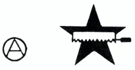
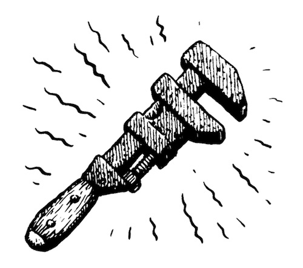
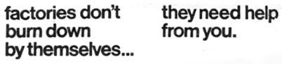
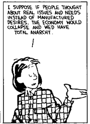

Anarchy means not necessarily the absence of order but an absence of rule.
Anarchism is a social movement that seeks liberation from oppressive systems of control including but not limited to the state, capitalism, racism, sexism, ableism, speciesism, and religion.
It is founded on the observation that since only a few are wise enough to rule themselves, even fewer are wise enough to rule others. Anarchists wish to create a society based upon individual freedom and voluntary cooperation.
Anarchists advocate a self-managed, classless, stateless society without borders, bosses, or rulers where everyone takes collective responsibility for the health and prosperity of themselves and the environment.
To be free is to allow each one to live their lives in their own way as long as each allows all to do the same. A just society is one in which liberty for one person is constrained only by the demands created by equal liberty for another.
Harmony in such a society is obtained, not by submission to law, or by obedience to any authority, but by free agreements concluded between the various groups, territorial and professional, freely constituted for the satisfaction of the infinite variety of needs and aspirations of a person.
The individual cannot bargain with the State. The State recognizes no coinage but power: and it issues the coins itself.Ursula K. Le Guin, The Dispossessed 
green anarchism
- Anarchy: A word that comes from the Greek, and signifying "without government", the state of a people without any constituted authority.
- Health: A state of complete physical, mental and social well-being and not merely the absence of disease or infirmity.
- Dark Greens: The ones who believe that environmental problems are an inherent part of industrialized civilization, and seek radical political change.
- Light Greens: The ones who see protecting the environment first and foremost as a personal responsibility, focusing on environmentalism as a lifestyle choice.
- Veganism: A philosophy and way of living which seeks to prevent all forms of exploitation of, and cruelty to, other animals for food, clothing or any other purpose.
- Ecofeminism: Ecofeminist thinkers draw on the concept of gender to theorize on the relationship between humans and the natural world.
Anarchism directs its forces against the greatest foe of all social equality; namely, the State, organized authority, or statutory law. Just as religion has fettered the human mind, and as property, or the monopoly of things, has subdued and stifled people's needs, so has the State enslaved the spirit, dictating every phase of conduct. It matters not whether it is government by divine right or majority rule. In every instance its aim is the absolute subordination of the individual.
The State is the economic master of its servants. Good men, if such there be, would either remain true to their political faith and lose their economic support, or they would cling to their economic master and be utterly unable to do the slightest good.
Human laws are invalid, because they are contrary to the laws of nature.
The contention that a standing army and navy is the best security of peace is about as logical as the claim that the most peaceful citizen is he who goes about heavily armed.
- Life Without Law
- Indigenous Anarchist Federation
- Tyranny of structurelessness
- Center for a Stateless Society
Sabotage means primarily: the withdrawal of efficiency
Luddism was a working-class movement opposed to the political consequences of industrial capitalism. The Luddites wanted technology to be deployed in ways that made work more humane and gave workers more autonomy. The bosses, on the other hand, wanted to drive down costs and increase productivity. Smashing looms and stocking frames was the tactic, not their goal. Their goal was to challenge not the technology itself, but rather the social relations that governed its use.
A neo-Luddite movement would understand no technology is sacred in itself, but is only worthwhile insofar as it benefits society. It would confront the harms done by digital capitalism and seek to address them by giving people more power over the technological systems that structure their lives.
Every society has the criminals it deserves.
By refusing to collaborate with an oppressive order, by creating forms of resistance to any order that perpetuated massacres, devalued us as human beings, atomised societies and imperilled our very existence, we could then perhaps hope to salvage man from a conformist throwaway culture.
You'll die of thirst before the rich stop swimming.
- A Field Guide to Monkeywrenching
- Infrastructure Sabotage
- Earth First! Mechanic's Guild
- The ALF Primer, pdf
- Ozymandias Sabotage Handbook, pdf
- Fractracker
The refusal to conceive of human action as divisible.
Oscar Wilde defines a perfect personality as one who develops under perfect conditions, who is not wounded, maimed, or in danger. A perfect personality, then, is only possible in a state of society where one is free to choose the mode of work, the conditions of work, and the freedom to work. One to whom the making of a table, the building of a house, or the tilling of the soil, is what the painting is to the artist and the discovery to the scientist — the result of inspiration, of intense longing, and deep interest in work as a creative force.
People need not only to obtain things, they need above all the freedom to make things among which they can live, to give shape to them according to their own tastes, and to put them to use in caring for and about others.
The marvelous pursuit is born from the desire to create playful complexity in a desert of simplistic convenience. A hobby is a form of consumption, the marvelous pursuit on the other hand, is a rejection of commodified convenience, it can't be bought because it has no price. A marvelous pursuit refuses socially ascribed use. People learn such socially useless things as the names of fern and the grammar of dead languages because they are bored with the mind-dumbing options dished out to them on TV.
Marvelous pursuits are a means to resist alienation from one's environment because they are a temporary means to make that environment one's own, by ascribing one's own, often bizarre, value for things and spaces.
These pursuits often create complexity but a complexity which is opposed to that of the technician. The master of a marvelous pursuit can never be an engineer because the marvelous is by nature useless to society, and therefore to capital.
Hobbies are forms of alienated leisure, compartmentalized parts of one's life, past-times whose purpose is to fill our time with countable accomplishments and enjoyments. The value in marvelous pursuits lies in their self-creation which evades both use-value and exchange value.
Since the riches of information, entertainment, games and new electronics will fail to center and illuminate our lives, however, their diversion will more and more lead to distraction, the scattering of our attention and the atrophy of our capacities. They will be more diverting due to greater variety and closer fit with our individual tastes. It is already apparent that the new video technology is not used by people as the crucial aid that finally allows them to develop into the historians, critics, musicians, sculptors, or athletes that they have always wanted to be.
Divided Labor
Divided labor must be distinguished from the specialization of work which is as old as human culture and practiced in the very pretechnological work world that some of us admire. Nor is the division of a work process into steps and the frequent repetition of just one step characteristic of modern industrial labor.
A tinsmith who is about to make a great number of funnels would not complete one after another, each from start to finish, but would first do all the drawing on sheet metal, then all the cutting, and so on, and would make specialized devices which the economy of scale would permit and reward. The typically modern division of labor, on the other hand, divides one process into many simple parts and assigns the performance of each to a single worker. The monotonous and endless repetition of one small task is typical of much of modern labor and gives it its stupefying and draining character.
Divided labor favors dexterity only if we understand by the latter the ability to execute a simple motion quickly and reliably. If by dexterity we mean the manifold and trained ability of bodily timing, strength, and responsiveness, then the division of labor is the elimination of dexterity. The division of labor makes work more reliable because the simplicity of divided labor eliminates the need of skill, thus enlarging the labor pool and making workers more freely substitutable for one another.
Through a practice we are able to accomplish what remains unattainable when aimed at in a series of individual decisions and acts.Albert Borgmann, Technology and the Character of Contemporary Life
incoming varvara devlog adaptation